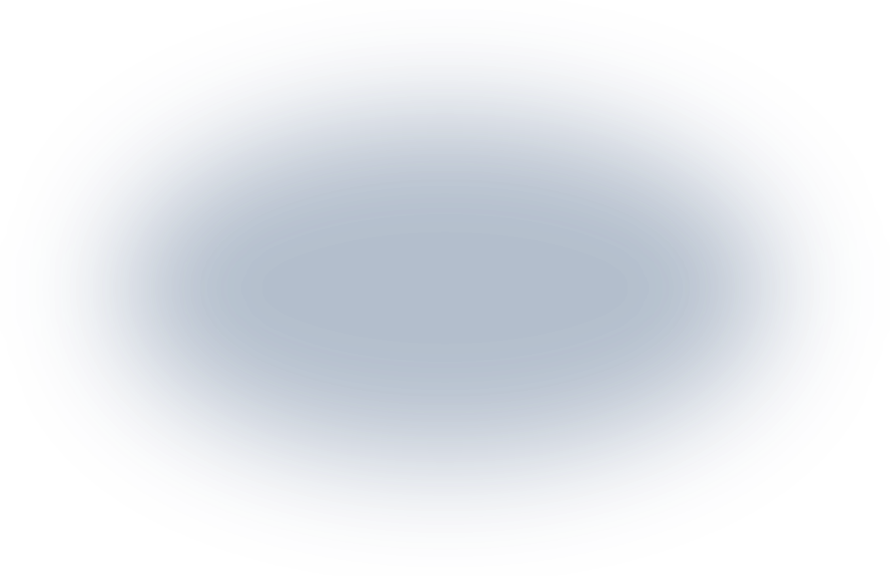
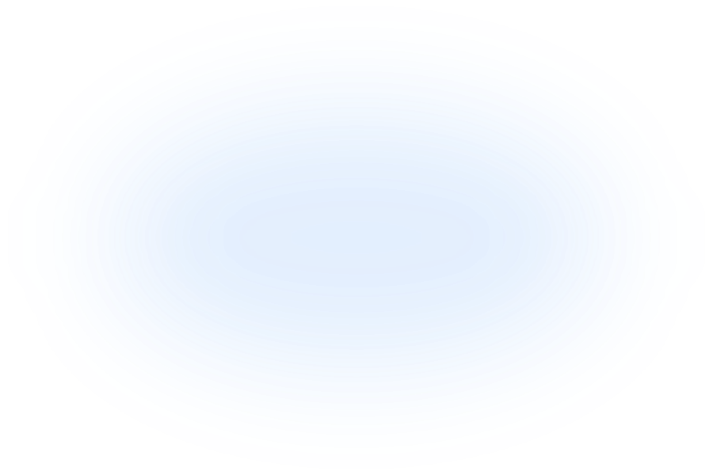
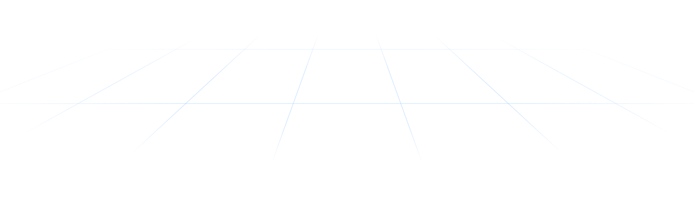
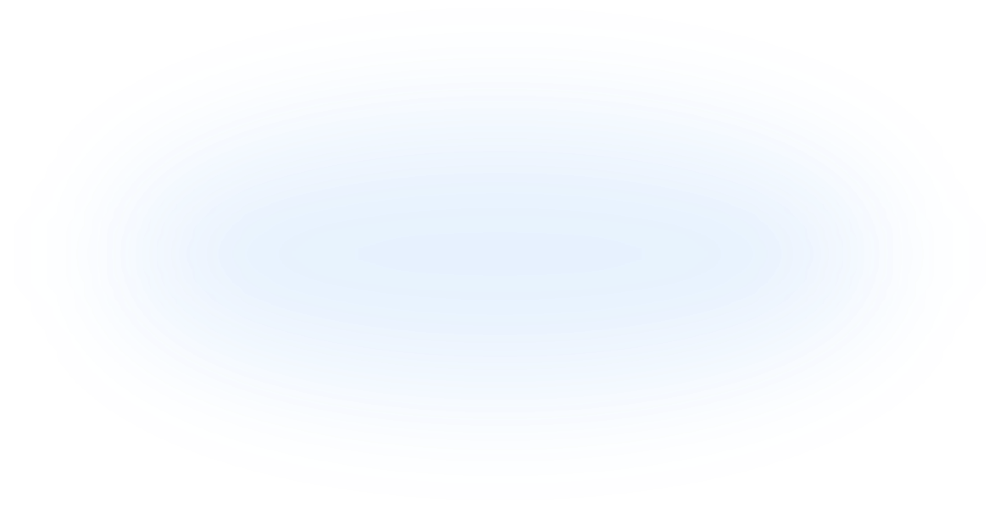
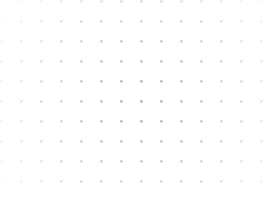
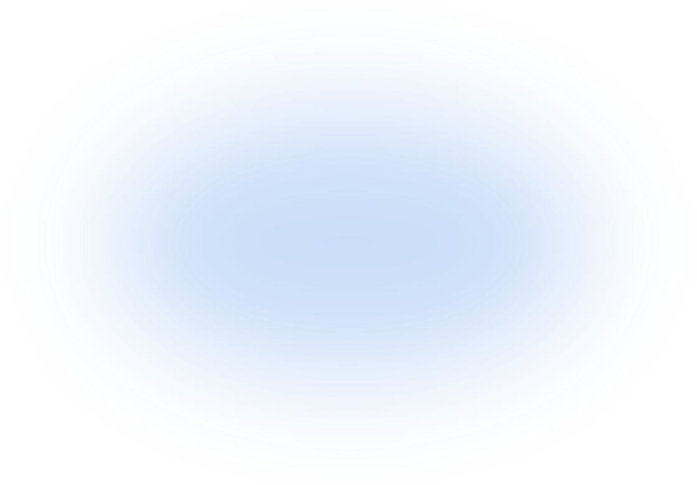
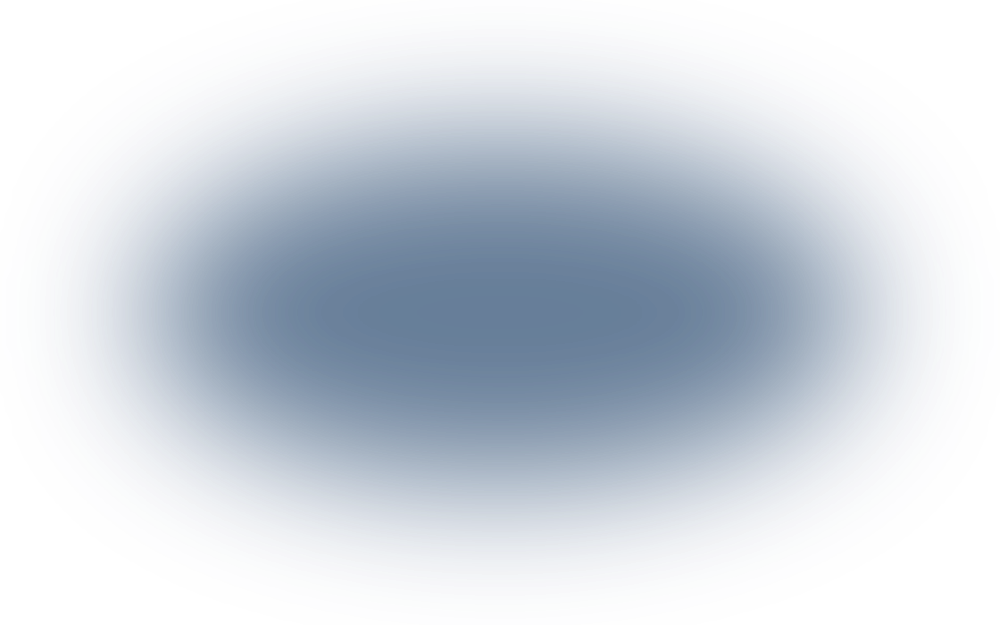
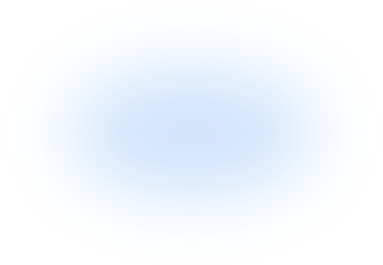

Ask your company data
in plain language
Connect your databases and documents,
then ask and get answers in natural language.
You can type a question before signing up. After you log in, OwlAI starts with your question.

Compared sales by region. The Capital area is highest, up 12% from last quarter.
Sales by region, Q3 2026 (KRW 100M)
Ask OwlAI anything
OwlAI uses generative AI to write answers and documents. Check important details before use.
●SQL completed (0.8s)
SELECT region, SUM(amount) FROM sales_summary WHERE quarter = '2026Q3' GROUP BY region;
3 connected DBs
Data AI from the company
that builds databases
TmaxTibero connects the data you already use, as it is. Pick tables to analyze and AI reads the structure and writes descriptions. OwlAI only runs read queries, so your data never changes.
TmaxTibero products
Other DBs and files
01Connect DBs
Admin consoleConnect a DB in the admin console with a read-only account. Private network DBs connect through an SSH tunnel.
3 connected DBs
02Schema analysis
AI analysisPick tables and AI reads their structure and data distribution, then writes table descriptions.
AI-written description
sales_summary: total sales by region and quarter. amount is in KRW03Role permissions
PermissionsSet which DBs each role can use, and members can only ask about allowed DBs.
RoleSales ops team
●Queried allowed DBs only

Days of waiting for data,
cut down to
a single question
Stop requesting, waiting, and fixing data checks. Ask directly and finish right away. Every result keeps the SQL it ran, so the data team only reviews.
Questions, routine work, and meetings,
all in one place
Ask like you talk,
and see the SQL
Turns your question into SQL, runs it, and shows the results in tables and charts. The SQL it ran and the tables it used are saved with every answer.
- Tables, charts, and SQL on one screen
- Download result tables
- Keep analyzing with follow-up questions
“Compare sales by region for last quarter” → Run SQL → Bar chart, table, and source table
Set up routine work
just once
Save weekly work as a playbook and it runs again on schedule, keeping each result in the run history.
- Scheduled runs
- Run history and results kept
- Share with your team
“Make a sales report every Monday” → Runs every Monday at 09:00 → Saved as an Excel report
Run history
Every Monday at 9 AM, totals last week's sales by region and saves an Excel report.
Every Monday at 9 AM, totals last week's sales by region and saves an Excel report.
Every Monday at 9 AM, totals last week's sales by region and saves an Excel report.
Every Monday at 9 AM, totals last week's sales by region and saves an Excel report.
Model
Basic info
Trigger
Tasks
Every meeting ends
with a to-do list
Record a meeting and OwlAI transcribes it, then writes a summary and to-dos. You can find what was said later in chat.
- Transcripts and summaries
- To-dos with owners
- Search meetings from chat
32-minute ops meeting recording → 3-line summary → 2 to-dos with owners
Date 2026-10-20 10:00
Length 32 min
- Returns rose from last month, so check the cause by product first
- Also check whether shipping delays affected returns
Decision Analyze return causes by product and share at the next meeting
Action items- Review clearing 10 slow-moving items
- Add return metrics to the weekly sales report playbook
Get answers as Excel, Word, PowerPoint, or HWP files and fill in company templates.
Finds the matching parts of policies and manuals and answers with them as sources.
Connect Notion, Jira, GitHub, and Google Drive and use them in chat.
After you approve the research plan, several researchers split the work and write a report.
Upload team documents and members use them as shared sources.
Reads files in a folder on your PC and saves results to the same folder.
How each team uses it
We picked common questions for each role.
Click a question to see a sample answer.

How OwlAI handles
your company data
Every question starts with a permission check.
OwlAI only runs read queries and logs every step.
From question to answer
01Ask
A member asks in natural language02Check permissions
Uses only DBs allowed for the role03Write SQL
AI writes a read query04Run query
Runs read-only querieson connected DBs
05Answer
Shows tables, charts,and the SQL it ran
Each company's data and chats are stored separately. Other organizations' data can't be queried.
Admins set which DBs, document collections, and tools each role can use. Members only ask about what they're allowed to see.
Questions only run read SQL. OwlAI never edits or deletes data.
Connect DBs with an account that can only read. Copy the read-only account script right from the setup screen.
Logins, permission changes, playbook runs, and tool runs are kept for 3 years.
Install on your servers and use your own model, and questions and query results never leave the company.
The address, operator, and data location depend on how you deploy.
Try free for 1 month,
teams at $20 per user/month
Which DBs can I connect?
You can connect TmaxTibero's Tibero, OpenSQL, and OwlDB, plus Oracle, PostgreSQL, MySQL, MariaDB, AWS RDS, and Supabase. Questions only run read queries, so your data never changes.
Can I use it without connecting a DB?
Yes. It answers from web search and the files you upload. Connect a DB and it answers from your company data too.
How is company data protected?
Each organization's data is kept separate, and each role gets its own allowed DBs and documents. Only read queries run on DBs, and traffic is encrypted with TLS. The SQL the AI ran and the documents it read stay in the activity log admins can see.
Does company data leave the company?
In the cloud, document excerpts and DB query results used in answers are processed by an external AI provider (OpenAI, US). Service data is stored in the AWS Seoul region. If work data can't leave the company, use your own model on-premises so questions and query results stay inside.
Can we install it on our own servers?
Yes. The on-premises edition installs OwlAI on your servers. Pick the AI model from open models on your own GPU servers or an external API your company approves. It also runs on air-gapped networks by uploading update files.
How long does adoption take?
The cloud version works as soon as you sign up. For on-premises, we suggest checking fit with the cloud (2 to 4 weeks), testing on your servers (4 to 8 weeks), then rolling out (2 to 3 months). Timelines are examples and vary by scale.


Ask a question now
New sign-ups get 1 month of free trial credits. Your question stays in the input box after you log in.